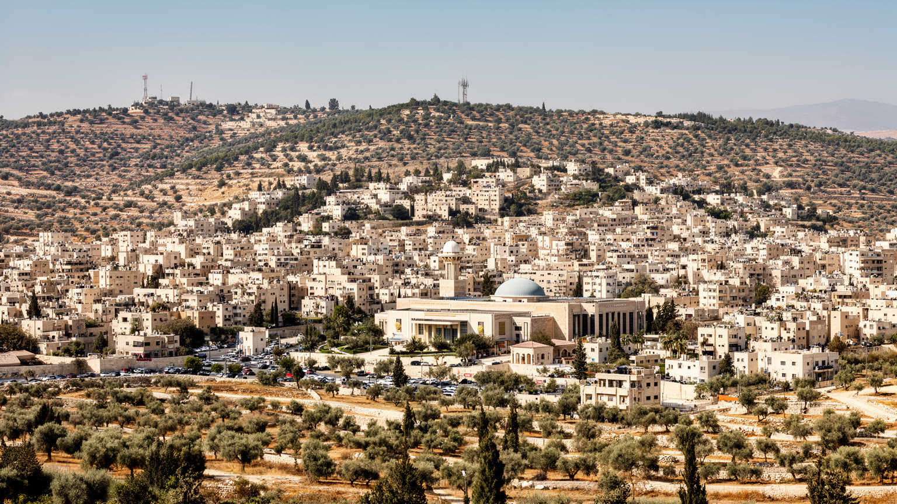
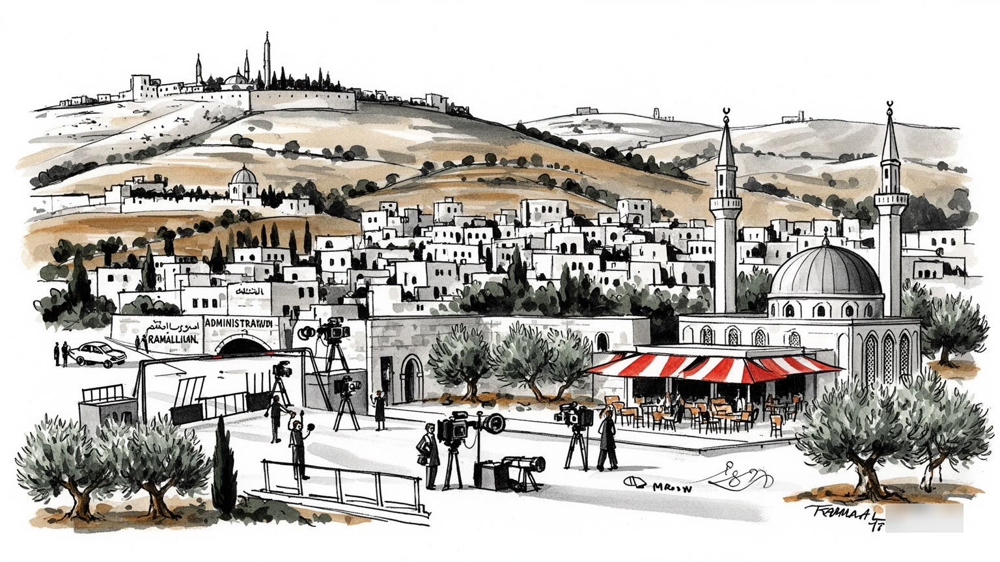
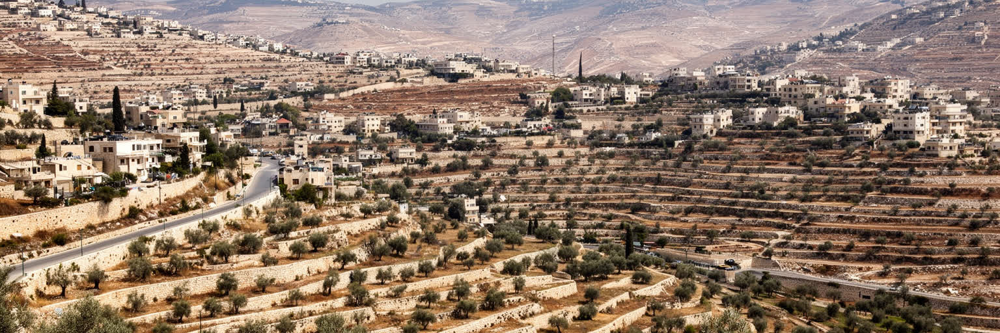
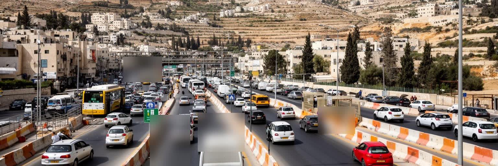
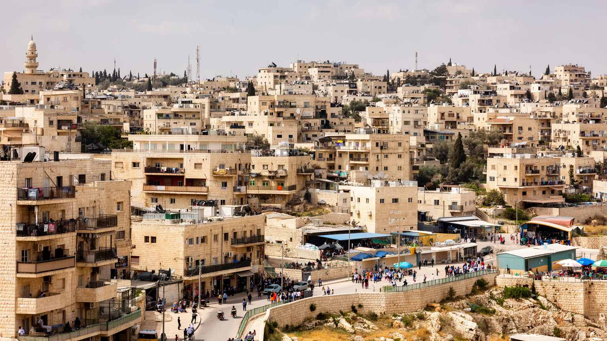
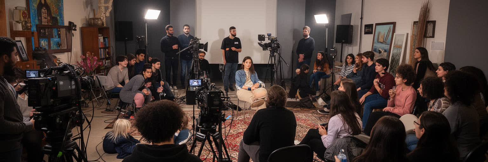
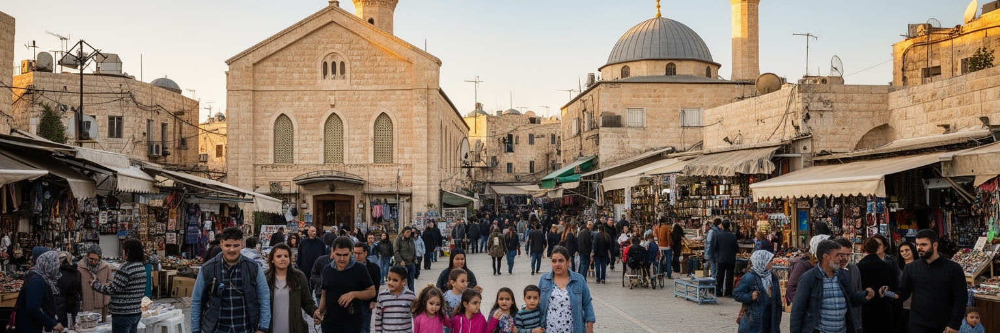
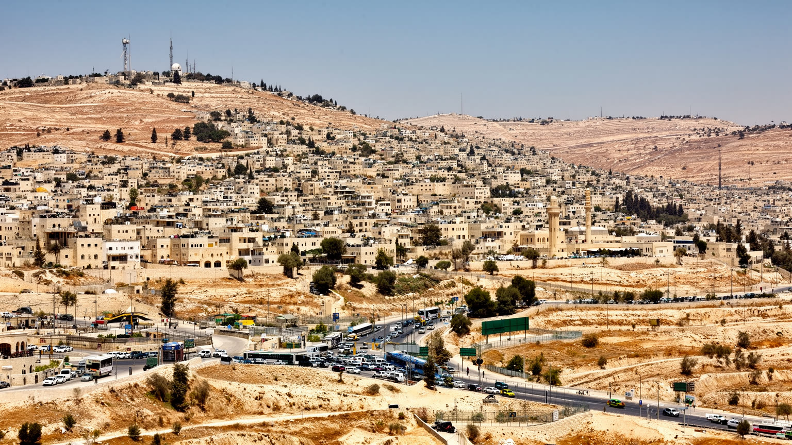

地政学
ラマッラーは西岸地区の行政中枢であり、自治政府、治安機関、外国代表部、NGO、報道が集まります。エルサレムへの近さ、検問、入植地、分離壁が都市の日常を囲み、外交と通勤が同じ道路で緊張を帯びています。常に。

🇵🇸 パレスチナ / 西岸地区 / World City Atlas
パレスチナ自治政府の行政中枢として機能する丘陵都市です。政治、金融、NGO、文化、宗教、占領下の日常、検問、旧市街、劇場、若者の生活が重なります。
都市の骨格
ラマッラーは正式な首都宣言だけで語れない都市です。行政機関、銀行、NGO、劇場、教会とモスク、検問を越える通勤、周辺村落との関係が、丘陵の街路で日々接続されています。

ラマッラーは西岸地区の行政中枢であり、自治政府、治安機関、外国代表部、NGO、報道が集まります。エルサレムへの近さ、検問、入植地、分離壁が都市の日常を囲み、外交と通勤が同じ道路で緊張を帯びています。常に。
行政、銀行、通信、教育、メディア、国際援助、飲食、小売が雇用を作ります。公共部門の給与、援助資金、送金、起業が経済を支えますが、移動制限と政治不安は投資、物流、若者の働き方を左右し続けます。今も続きます。
モスク、教会、ラマダン、復活祭、結婚式、葬儀、詩、音楽、映画祭が街の暦を作ります。ディアスポラの記憶、難民の経験、キリスト教徒とムスリムの近接が、ラマッラーの文化を政治だけでない厚みにしています。
旧市街、マナラ広場、カフェ、劇場、ムカタア、博物館は徒歩とタクシーで巡れます。一方で住民には家賃、停電、水、検問、通勤、物価、将来不安が身近です。観光は生活の制約を理解する入口になりますね。深く。

ラマッラーは西岸地区中央部の丘陵にあり、標高のある街路、谷へ下る道路、周辺村落、難民キャンプ、ビレ、ベイトゥニア、エルサレム方面の交通が近い距離で重なります。地中海に近い気候を持ちながら、海港都市ではなく、内陸の行政とサービスの中心として成長してきました。丘の上の住宅地からは都市の広がりが見えますが、その視線の先には検問、入植地、分離壁、軍事道路、行政境界が複雑に入り込みます。地形は単なる景観ではありません。坂道は徒歩、タクシー、バスの使い方を決め、谷と尾根は住宅価格や眺望を分け、限られた土地は建物の高層化と郊外化を押し出します。ラマッラーを読むには、市域だけでなく、隣接するビレや周辺の村、人びとが通勤、通学、買い物、病院、行政手続きで行き来する広域生活圏として見る必要があります。丘陵の涼しさは都市の魅力ですが、道路の制約と政治的な分断は移動の自由を狭めます。眺めの良い街であることと、移動が常に条件付きであることが、この都市の空間感覚を作っています。都市の境界は行政線よりも生活の動線で感じられ、村の親族、大学、病院、官庁、商店街が一日の中で結び直されます。坂の多い地形は景観の個性であると同時に、歩行者や高齢者、車を持たない人の負担にもなります。日々の移動を追うほど、丘陵都市の広がりが生活の実感として立ち上がります。

ラマッラーはパレスチナ自治政府の実務上の行政中枢として、官庁、治安機関、政党、外国代表部、国際機関、報道機関が集まる都市です。ムカタアは行政施設であると同時に、ヤセル・アラファトの記憶、包囲、葬送、国家性への希求を抱えた政治的な場所でもあります。ここで行われる会議や声明は、国内統治だけでなく、イスラエル、近隣アラブ諸国、欧米、国連、援助機関との関係に直結します。首都機能と呼べるものがある一方、主権、境界、移動、治安、財政は完全には自律していません。税収の移転、検問、区域区分、許認可、治安協力、国際援助の条件が、市役所の仕事や住民サービスにも影響します。ラマッラーの政治空間は、巨大な国会議事堂で見せる権力ではなく、庁舎の警備、記者の移動、抗議の集まり、官庁へ向かうタクシー、外国代表部の車列として日常の街路に現れます。政治は抽象的な理念だけではなく、住民がパスポート、許可、給与、医療、移動、学校をどう確保するかという実務に結びついています。だからこそ、ラマッラーの行政中枢性は希望と疲労を同時に帯びます。官庁街の昼食店、警備された入口、抗議後に片付く広場、記者の電話は、国家制度が未完成でも日々運営されていることを示します。住民にとって行政は遠い象徴ではなく、給与、証明書、補助金、道路の修理として暮らしへ戻ってきます。

ラマッラーの日常を理解するうえで、移動の問題は避けられません。エルサレムへ近い地理は本来なら大きな利点ですが、検問、許可証、分離壁、入植地道路、軍事的な閉鎖は、距離を時間と不確実性へ変えます。仕事へ向かう人、病院へ行く人、学生、商人、家族を訪ねる人、外国人訪問者は、道路の状況や政治的緊張に左右されます。都市内部ではカフェ、銀行、劇場、学校が普通に開いていても、周辺へ出ると移動の条件が変わるため、住民の時間割は常に余裕を求められます。物流も同じです。建材、食品、医薬品、燃料、印刷物、観光客の移動は、道路と許可制度の影響を受け、価格や在庫、工事の進み方に反映されます。ラマッラーの都市性は、活気ある中心部と、その外側にある移動制限の緊張を同時に読むことで見えてきます。通れる道があること、閉まる可能性があること、迂回を強いられることは、心理にも経済にも影響します。移動の自由が限られる都市では、近さと遠さの感覚が地図通りにはならず、数キロの距離が一日の計画を変えることがあります。この不確実性が、住民の忍耐と都市の柔軟さを形作っています。予定通りに着けない可能性は、家族の集合、商談、学校の試験、医療の予約まで変えます。移動の制約は例外的な事件ではなく、都市生活の前提として組み込まれています。日常に。

ラマッラーの経済は、工業港や大規模製造業ではなく、行政、銀行、通信、保険、教育、医療、メディア、NGO、国際援助、飲食、小売、建設、不動産の組み合わせで動いています。公共部門の給与は消費を支える重要な流れであり、援助資金や国際機関の事務所は専門職、翻訳、調査、運転、警備、宿泊、会議、印刷を生みます。銀行や通信会社は近代的な都市の顔を作り、若い起業家やIT人材も新しい仕事を探しています。しかし、経済は政治的な制約から自由ではありません。移動制限は物流と市場の拡大を難しくし、税収の滞りは公共給与に影響し、紛争の激化は投資と観光を止めます。援助は生活と制度を支える一方、外部資金への依存や短期プロジェクト化も生みます。ラマッラーのカフェやオフィスには国際都市らしい言語と雰囲気がありますが、その背後には失業、物価上昇、若者の国外志向、周辺地域との格差があります。経済を読むには、銀行の建物だけでなく、給与日、送金、許可証、家賃、公共サービスの遅れ、大学卒業後の仕事を見なければなりません。都市の活気は、制約の中で働く人びとの調整によって保たれています。小さな商店や飲食店は政治の変化をすぐ売上に受け、建設現場は資材の到着に左右されます。サービス経済の強さは、同時に外部資金と移動条件への弱さでもあります。

ラマッラーは政治都市であるだけでなく、パレスチナ文化の発信拠点でもあります。劇場、映画祭、ギャラリー、音楽、詩、出版社、ラジオ、テレビ、独立系メディア、大学の講演が、街の知的な空気を作ります。アル・カサバ劇場や文化センターのような場所は、娯楽の場であると同時に、記憶、抵抗、風刺、喪失、日常の希望を表現する公共空間です。カフェでは記者、学生、活動家、研究者、外国人職員、アーティストが出会い、アラビア語、英語、時に他の言語が混ざります。文化は政治を説明するための飾りではありません。占領、難民、家族の分断、殉教者の記憶、ジェンダー、世代差、宗教、消費文化をめぐる問いが、作品や会話として都市に現れます。一方で表現の自由は外部の圧力だけでなく、内部政治や社会規範とも向き合います。資金の多くが援助や財団に依存する場合、文化活動は継続性と自律性の問題も抱えます。ラマッラーの文化を読むには、ポスターやイベントだけでなく、誰が舞台に立てるのか、どの記憶が語られ、どの声が沈黙するのかを見る必要があります。文化の厚みは、政治的な困難の中で普通の笑い、音楽、恋愛、食事、議論を守ろうとする都市の力でもあります。文化施設は若者が未来を試す場所であり、海外のパレスチナ人と地元の住民を結ぶ回路にもなります。作品が国際的に読まれるほど、街の小さな会話も世界へ届く可能性を持ちます。

ラマッラーの宗教生活は、ムスリムとキリスト教徒が近い距離で暮らすパレスチナ社会の一面を示します。モスクの礼拝、ラマダン、金曜の集まり、教会の鐘、復活祭、クリスマス、結婚式、葬儀、家族の訪問が、都市の時間を区切ります。ラマッラー周辺にはキリスト教徒の歴史を持つ家族やディアスポラとのつながりがあり、移民先から戻る人、夏に訪れる親族、海外へ学ぶ若者が、街に国際的な感覚を加えます。宗教は観光の対象である前に、近所の助け合い、食事、学校、慈善、喪の儀礼を支える仕組みです。同時に、宗教的な共存は理想化だけでは捉えられません。社会規範、家族の期待、政治的緊張、少数派の不安、若者の価値観の変化が重なります。ラマッラーでは、宗教が国家問題の前面に出るだけでなく、日常の礼儀や祝日の交通、店の営業時間、家族行事として見えてきます。教会やモスクの建物を眺めるだけでは不十分で、そこへ向かう人の服装、食卓、挨拶、寄付、共同体の記憶を読む必要があります。信仰は分断された土地で人を支える言葉であり、同時に都市が多様な住民をどう受け止めるかを測る尺度でもあります。宗教の暦は、政治の不確実さの中で生活にリズムを与えています。祝祭の日には海外の親族から電話が入り、街の店先には贈り物や菓子が並びます。こうした小さな儀礼が、離散した家族と地元の共同体をつなぎ直します。

ラマッラーの暮らしは、政治ニュースで語られる緊張だけでは説明できません。朝の通勤、学校への送り迎え、パン屋、野菜市場、タクシー、銀行、携帯電話店、大学、病院、結婚式場、夕方のカフェが、都市の普通の時間を作ります。行政中枢として人が集まることで、家賃と土地価格は上がり、古い住宅地は新しい集合住宅や商業施設へ変わってきました。周辺の村や難民キャンプから通う人、家族で住む人、単身で働く人、海外から戻った人、援助機関で働く外国人は、同じ街を違う速度で使います。水の供給、停電、廃棄物、道路混雑、駐車、坂道の移動、公共空間の不足は、日常の小さな負担です。生活の安全は軍事的な意味だけでなく、家賃を払えるか、子どもを学校へ送れるか、病院へ行けるか、検問で遅れないか、将来を描けるかにも関わります。ラマッラーは比較的自由で開かれた雰囲気を持つと語られますが、その自由は全員に均等ではありません。若者、女性、低所得者、周辺から来る労働者にとって、都市の使いやすさは別の表情を持ちます。暮らしを読むことは、政治の大きな物語を、家族の台所、家計、通学路、近所の会話へ戻すことです。夜の外食や結婚式の明るさも、翌朝の検問や給与の遅れと切り離せません。都市の普通さは、困難がないという意味ではなく、困難を抱えたまま日常を作る力として現れます。

ラマッラー観光は、巨大な古代遺跡を一つ見る旅ではなく、政治的記憶と日常文化を歩いて読む旅です。マナラ広場、旧市街、ムカタア、アラファト博物館、文化センター、劇場、カフェ、市場、周辺の丘を巡ると、行政中枢、生活都市、抵抗の記憶、若者文化が同じ距離にあることが分かります。観光客はしばしばベツレヘム、エルサレム、ヘブロン、ナーブルスへの移動と組み合わせて訪れますが、ラマッラーに滞在すると西岸の日常の速度を感じやすい。レストランやカフェでは、オリーブ、パン、チーズ、肉料理、甘い菓子、コーヒーが会話の場を作り、夜には音楽や友人との集まりが街を明るくします。ただし観光は政治から切り離せません。検問、移動許可、抗議、軍事的緊張、喪の記憶は、旅程に影響し得ます。記憶の場所を写真の背景として消費するだけでは、そこに暮らす人の経験を軽く扱うことになります。ラマッラーを訪れる価値は、緊張を避けることではなく、普通の暮らしが制約の中で続いている事実を丁寧に見ることにあります。観光は収入をもたらす一方、外からの視線に都市が説明を求められ続ける負担も生みます。敬意ある訪問は、店で食べ、歩き、聞き、急いで結論を出さない姿勢から始まります。丘の景色、劇場の入口、市場の会話、博物館の静けさをつなぐと、観光は単なる見物ではなく、記憶と現在を同じ道で読む行為になります。

ラマッラーの社会課題は、占領という大きな構造と、都市内部の格差が重なって現れます。若者には高等教育を受けた人が多い一方、安定した雇用は限られ、公共部門の給与遅延、民間投資の弱さ、移動制限、政治的不透明さが将来設計を難しくします。国外で働く親族や留学、移住への希望は、家族の誇りであると同時に、都市が人材を引き留めにくい現実も示します。女性の就業、公共空間での自由、家族の期待、宗教的な規範、政治活動への参加も、世代や階層で受け止め方が異なります。家賃上昇は専門職や援助機関の職員には都市生活を広げる一方、低所得者や周辺から通う労働者を押し出します。難民キャンプや村落との関係を見なければ、中心部のカフェ文化だけで都市を理解することはできません。医療、教育、心理的ストレス、拘束や暴力の記憶、喪失の経験は、統計に表れにくい負担です。ラマッラーの強さは、こうした不確実さの中で学び、働き、結婚し、店を開き、芸術を作る人びとの持続力にあります。しかし、持続力を美談にするだけでは不十分です。政治的な解決、移動の自由、透明な制度、住宅、雇用、公共サービスがなければ、個人の忍耐は都市の疲労へ変わります。支援制度や家族の助けは重要ですが、それだけでは若者の将来不安を吸収できません。都市が公正であるためには、中心部の活気と周縁の負担を同じ地図に描く必要があります。

ラマッラーは、人口規模だけで測れば小さな丘陵都市です。しかし、パレスチナ自治政府の行政中枢、外交と援助の窓口、銀行と通信の拠点、文化とメディアの発信地、周辺村落と難民キャンプを結ぶ生活都市として、極めて濃い意味を持ちます。ムカタア、マナラ広場、劇場、教会、モスク、大学、カフェ、官庁、検問へ向かう道路は、別々の風景ではなく、政治と暮らしが分かれずに動く一つの都市装置です。ラマッラーを単なる紛争の象徴として見ると、日常の創造力、食、音楽、教育、家族、商売の厚みを見落とします。逆に、活気あるカフェ文化だけを見れば、移動制限、失業、政治的不確実性、周辺地域との格差を見落とします。重要なのは、希望と制約が同時に存在する都市として読むことです。行政中枢であることは、制度を作る力と、未完の主権を毎日意識させる重さをもたらします。文化都市であることは、困難を表現し、笑い、議論し、未来を想像する場を生みます。ラマッラーの核心は、国家の未解決な問題が住民の普通の時間に入り込みながら、それでも人びとが都市を使い続ける点にあります。坂道、検問、祈り、会議、夕食、劇場の拍手を重ねて見ると、この都市の強さと傷が同時に見えてきます。将来を考えるには、政治交渉だけでなく、住宅、歩道、水、雇用、文化施設、周辺自治体との連携を見る必要があります。都市の成熟は、象徴的な建物よりも、制約下で普通の生活を守る細かな制度に表れます。